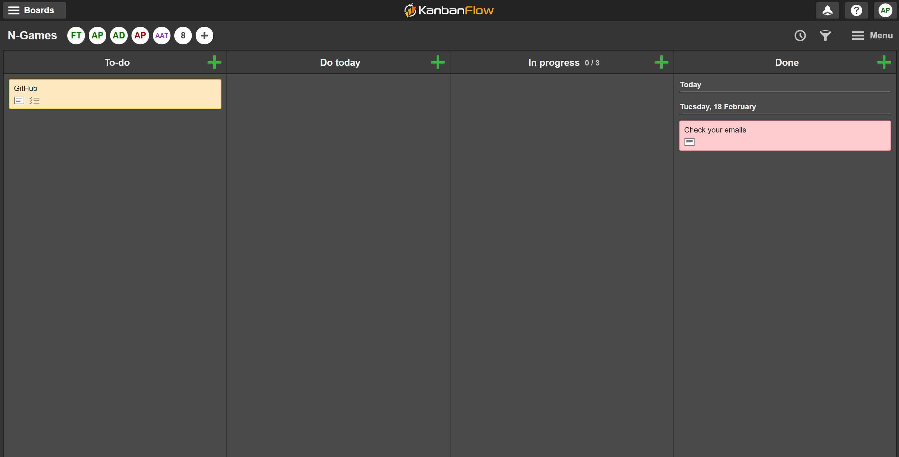
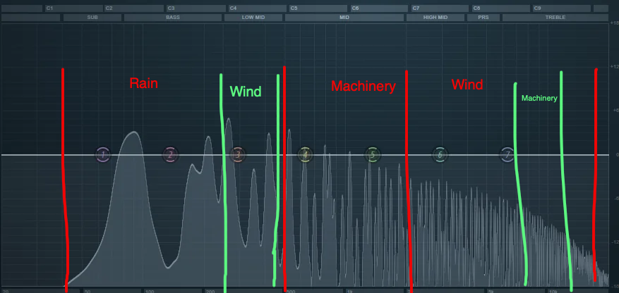

Im currently a 1st year student in the University of Limerick studying Computer Science, with hopes to move into a Bachelors in Computer Games Development.
Within Week 1, i made sure i found a team that i could group up with.
Being someone inclined to do Sound Production, this was no issue as everyone was looking
for someone to do the Sound.
Week 1 was perhaps the least busy week, as we were just getting started.
A few things i struggled with this week was that i found it hard to get organized with my team in terms of
trying to formulate an idea. Everyone was a little bit scattered and confused.
To fix this issue, we created a server for our team in Discord, which allowed us to organize meet times, and
work on ideas when we arent on campus.
Once we created this server, we were able to come up with a team name, which is N Games.
To further add to our communication, we created a board on KanBanFlow, and we also created a repository on GitHub
to keep each of our contributions organized.
This took alot of weight off my shoulders in terms of being organized and made the whole project feel quite a lot
less stressful.

Pictured above is our KanBanFlow Board.
Setting this up as a team proved to be an issue, as it took us all a while to join the correct board. Aswell as that, getting used to the UI was an issue.
However, after a few days of getting used to it, it is now something i have no issue using personally.
During Week 2, me and my team began to brainstorm ideas.
We came up with a few different concepts, consisting of:
Spirits : A multiplayer half 2d and 3d game, the main idea of the game
being that once you die, you die for good.
A fighting game, where you spawn into a world
with a range of abilites and powers with stats
you cannot change but you can improve.
The fighting is skill based.
Rob's Servant : With the core theme being a Suspicious Mansion, you are Rob's personal servant and your goal
is to observe small changes in the mansion that could indicate danger to Rob.
Once again, during this week, not much was done, just brainstorming and thinking as a team.
As my role is in Sound Production, i am planning on waiting until we have established a particular art style and theme
before i begin the production.
However, this week i did find it difficult communicating with my team. As everyone is doing their own thing, not much
communication is being passed on. Im sure this will improve during oncoming weeks as we will implement different apps that allow
us to assign tasks and communicate effectively.
I thought by implementing Discord and KanBanFlow it would improve our communication , however, it hasnt really done much.
This week, in terms of skills learnt, i began learning how to use Githubs repository commit system so that we
could organize our code and other files for our game. Learning this wasnt difficult as there are only a few things to know.
During Week 3, all the teams are now fully formed and ideas are beginning to be fleshed out. We have finally decided on our game idea: Rob's Servant. Whilst we havent really made anything yet, we are just mocking up what we want to see from our game, and the requirements we need to stick by.
The layout of our game is:
| Gameplay | Tone and Style | Development Vision |
|---|---|---|
The main features of the game will be:
|
|
To keep our game simple for development we will:
|
We met up this week to work on these ideas in our lab class, and one major issue i saw again was lack of communication and organisation. Everyone seems to be in their own little world it seems with our project, and hopefully overtime this improves. This week, i also learnt about the importance of team synergy. For a game or group project to flourish everyone needs to communicate about their piece of work they have been assigned to ensure the final product has no issues. A skill i learnt this week was definitely thinking of game features, as whilst we brainstormed our game, we all sat back and tried to come up with different features that could make our game interesting and also add to our theme.
In week 4, i began creating the music we will be using in our game.
The first composition i created was for the menu music. Considering the
game is meant to have an eerie and suspensful theme, i made sure to use
instruments such as creepy synths, violins and strings that instilled that feeling.
You can listen to the first composition i created below.
Here is the MIDI for the main melody. Click the image to view it.
For week 5, continuing working on the menu i began to search for sound effects we could use for the buttons.
However before creating these buttons i first wanted to try different versions of the Menu Music melody i created
i.e implement different instruments.
I worked on this for a solid 30 minutes, but my team had told me that the original was better everytime, so i just left it at that!
Anyway, Whilst searching for sounds i could use to create the buttons, i found it difficult to find the right one, so i decided to create my own using sound synthesis.
To create it, i started with a simple sine wave.
This is the foundation to the sound. Next, i created an envelope for it, to make it more of a "plucky" sound.
Finally, i added some very very suttle effects, such as a compressor to ensure the sound didnt go over a certain
volume threshold, and a tiny bit of reverb to create a tiny bit of room behind the sound.
I also created a higher variation for other buttons.
Some challenges i faced whilst creating these sounds is that i found it hard to think about what i wanted for the sound.
To over come this i based it off other games' menus, such as minecraft, which uses a more airy rim sound.
Using this as influence, it became much easier to think about what i wanted for the game.
Looking back on the process of how i created the sound, i also feel as if i had implemented an lfo (low frequency oscillator) it could have made the sound more interesting,
however, keeping it simple was what my team had instructed me to do.
In terms of my teams overall progress with the development of the game, they are nearly finished with the main menu. I feel as if there is a big lack of communication
between me and my team, but nonetheless they are working on their own jobs and are most likely busy.
During week 6, i spent most of my team just helping our team implement the music i had made into the game.
This was confusing for me at first, as i dont really have much knowledge of using C++, however, i found out that i didnt even have to code the music in manually,
instead, you just select an audio source. This alleviate alot of stress as i was always wondering how i would do this for the future features i create for the game.
The menu of our game currently looks like this:
We still havent implemented the sound effects to our menu, however that should happen over the coming weeks.
There are a few things i would personally change about the menu, example change the font and the shape of the buttons
to give it more of a vintage, victorian look, rather than some type of mobile game, however, i am not in charge of changing that.
One major issue i am still having is the communication aspect of our team. We dont really talk to each other, hence its hard to get a grasp
of where everyone is at with their bit. Im beginning to have doubts in some of our team members, as i have heard absolutely 0 from them.
Nonetheless, the menu was completed which is great progress, so id say we will get on just fine. They did a very good job.
A skill i learnt this week was how to implement music into unity. This proved to be really easy after a bit of research, and has now provided me with
alot of hope regarding what i can do with this game, from a sound and music aspect.
This week i wanted to implement more music for the game, specifically something to play in the background and have on repeat. My aims for this was
to create something suspensful yet mellow and beautiful, as it would be sitting in the background. An important thing i wanted to avoid was any annoying
or loud sounds in this melody as if i did implement those features it would distract the user from the game.
The first rendition i created is:
I used very simple elements such as pianos to build that beautiful melody but also used strings to create a suspensful feel.
I feel like this melody is similar to the menu music one, keeping the theme consistent.
One thing i did struggle with was coming up with the composition for the melodies. I went through several different versions
of this melody, and it took me a day or two to perfect it.
To create these songs im taking a lot of inspiration from the Elder Scrolls V: Skyrim soundtrack, specifically "Streets of Whiterun":
This song was the main inspiration for the melodies i created and definitely helped me perfect it.
Through using this song it definitely improved my composition skills in terms of music. It filled my brains
with ideas to build off of for this game.
I also feel as if this melody is better than the menu music, outlining my improvement during this semester.
In terms of my teams progress with their jobs it seems to be coming along decently, as they are now working on the mansion of the game, and the main fundamental parts of it.
I also recieved some feedback this week from my lecturer regarding my development diary which i have tried my best to implement, specifically
the content within the diary being too brief and not enough explanation provided.
To solve this, i went back through each entry ive done so far and made sure each one clearly explained what i did, learnt, and what i can improve on.
During week 8, our team continued to work on the individual bits we were assigned to. As im not involved
as much in the actual coding side of things, i spent most of this week making tweaks to the music i had created last week.
After some reflection, i realized the melody i created last week ended very abruptly, meaning it wouldnt be able to be repeated smoothly in the background of our game.
This would be a simple fix for me, as all i had to do was cut any sort of black space at the end of the pattern of the melody, ensuring it loops back into itself when played.
Another tweak i made was that i actually increased the bpm (beats per minute) of the melody. Its not a very noticeable change, but it does make the melody feel a bit more upbeat and lively.
The final version of the melody is:
After changing the melody, i sent it off to my team to implement into the game.
An issue i was having this week was the lack of communication between my team and i. Since about week 5 we havent really
been communicating our progress on the game to each other, which leaves me in the dark as to the progress of the game.
Despite this, i continue to work on my own bit, and always update my team on what ive completed.
However, i do know we are at the stage now where we are stiching assets together and polishing things off, which is great.
I feel like this week my reflective skills have improved, as i feel i wouldnt of noticed the issue about the melody unless i was reflecting on it.
I also feel like my communication skills have improved, as i am now able to communicate with my team what i have done and what i need from them, however they still seem to be unresponsive.
During week 9, i spent most of my time working on more sound effects for the game. I wanted to create a sound for footsteps, and also just some ambience that would play in certain areas of the game.
To create the footsteps, i cycled through a few premade samples that i found online, and after i found a good one, i brought it into my DAW and just cleaned it up a little bit
with some EQ and compression. I also added a tiny bit of reverb to create a bit of space to our characters walk.
The final sound is:
To create the ambience, i followed a similar process to the footsteps, however i used a few different samples to create a more complex sound.
I used samples of wind, samples of rain, samples of machinery such as trains and combined them all together.
Each of the samples i EQ'd heavily and took specific frequencies out of them.
I made it so each sample filled up a different bit of the frequency spectrum, so that it created an intersting ambience

The final sound is:
I feel like this week i have improved my sound engineering skills, as i have learnt how to carve out a sound based on their frequencies.
I also feel like my sound design skills have improved, as i have learnt how to layer different sounds together to create a more complex sound.
The main issue i had this week was that i was struggling to find the right samples to use to create the finals sounds, specifically for the footsteps.
Every sample i found was either too loud or too quiet, and it took me a while to find that sweet spot.
I sent off the final sounds to my team to implement into the game.
In terms of game progress, my team has sent me an update, thankfully. Our communication has improved greatly over the past week. The update they provided me with
is in video form and features the main charater in our game.
Week 10 was my final week of working on the game, as i hadnt any more work i had to do. The final amount of things i contributed to the game were:
Feel free to reach out for collaboration or inquiries.
Email Me